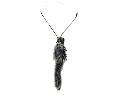
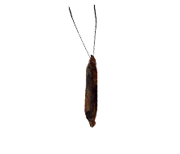

VAN CLEFF & ARPELS Cornaline


Intégration d’un interstitiel mobile/tablette responsive pour un collier.
Les animations ont été faites en Jquery et CSS3 pour plus de fluidité.
Il fallait que le rendu soit élégant, le plus gros du travail a donc été sur les
battements d’ailes des papillons ainsi que sur leurs trajectoires.
Les animations ont été faites en Jquery et CSS3 pour plus de fluidité.
Il fallait que le rendu soit élégant, le plus gros du travail a donc été sur les
battements d’ailes des papillons ainsi que sur leurs trajectoires.